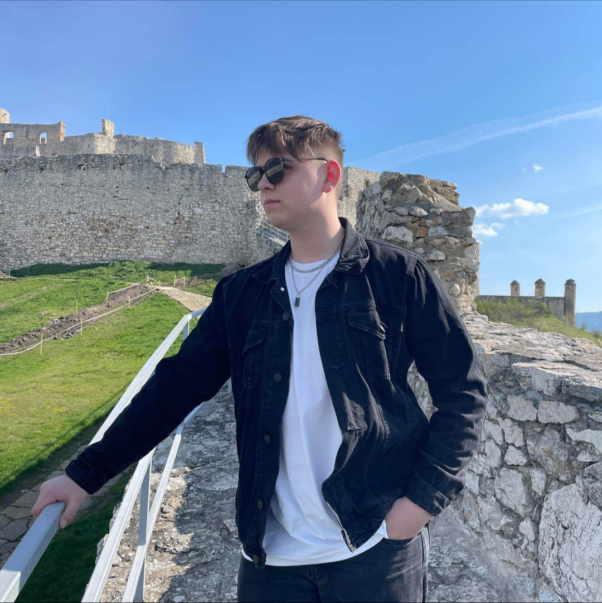
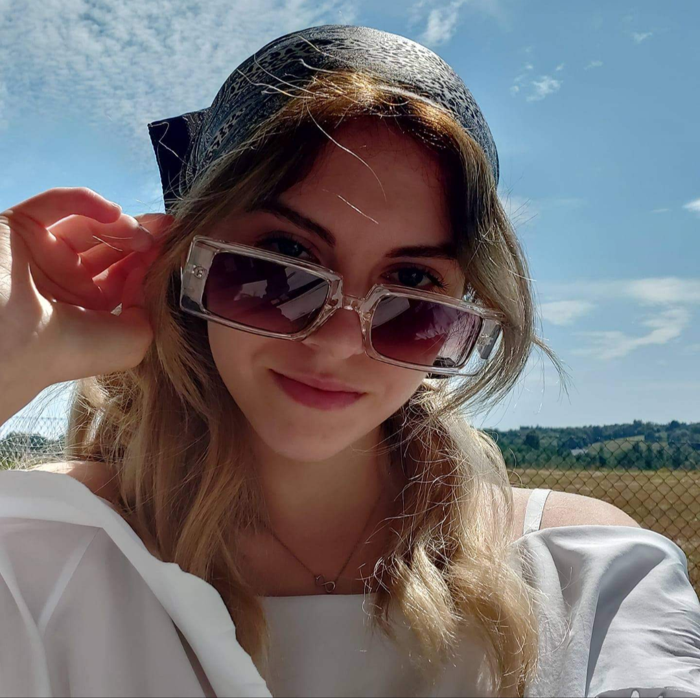

SKŁADY
BRAMKARZE

Tapir
1
Światowej klasy bramkarz urodzony w Ciężkowicach
został przygarnięty do naszych szeregów, żeby chronić
naszą bramkę i posyłać długie podania na napastników
i skrzydłowych. Choć ma tylko 150 cm wzrostu, czasami
wybija same okienka.

Azik
8
IMPOSTOR
OROŃCY

Wąs
2
Z pod skrzydeł wzięliśmy prawego obrońcę,
który posiada duży talent, aby wycisnąć z niego
jak najwięcej kipsznianistycznej magii. Gdy nasz
napastnik nie pojawi się na meczu, to ten zawodnik
wychodzi na boisko i czaruje swoim dryblingiem,
idąc do przodu.

Kangur
3
Filip "Kangur" Rąpała, chłopak z ogromnym talentem,
jest diamentem naszej drużyny, który ciągle jest szlifowany.
Mamy nadzieję, że kiedyś zagra cały mecz bez odpoczynku.
Podczas rozgrywki twierdzi, że w niektórych sytuacjach
może zostać maskotką naszej drużyny.
POMOCNICY

Kacprol
4
Kacper Rąpała, pomocnik, który inspiruje się Messim,
ponieważ jego zadaniem jest podprowadzenie piłki
jak najbliżej bramki, kiwając obrońców wroga

Prawa Pomoc
Hubo
6
Hubert Maniak jeden z skrzydłowych choć nie
jest najszybszy to nadrabia brazylijską technika
i strzałami z dystansu

Lewa Pomoc
Olo
7
Olo Nędza, drugi z naszych skrzydłowych,
który jest szybki jak wiatr i gubi za sobą
obrońców jak dziewczyny pierścionki, ma potężną
przewagę fizyczną nad przeciwnikami i przepycha każdego.
NAPASTNICY

Aro
5
Aro Maniak, najagresywniejszy z całej ekipy,
twierdzi, że podczas bójki jest w stanie poskładać
całą drużynę wroga. Ma bardzo mocne strzały, potrafi
takim uderzeniem wybić nadgarstek bramkarza.
KADRA

Trener
Miro
---
Trener Miro częściej jeździ na szkolenia niż na treningi
klubu, ale gdy na treningu się pojawi, potrafi tak
wyszkolić całą drużynę, że rywale się boją.

Sponsorka
Marlena
---
Marlena Maniak (dziewczyna mira) sponsorka klubu KGB